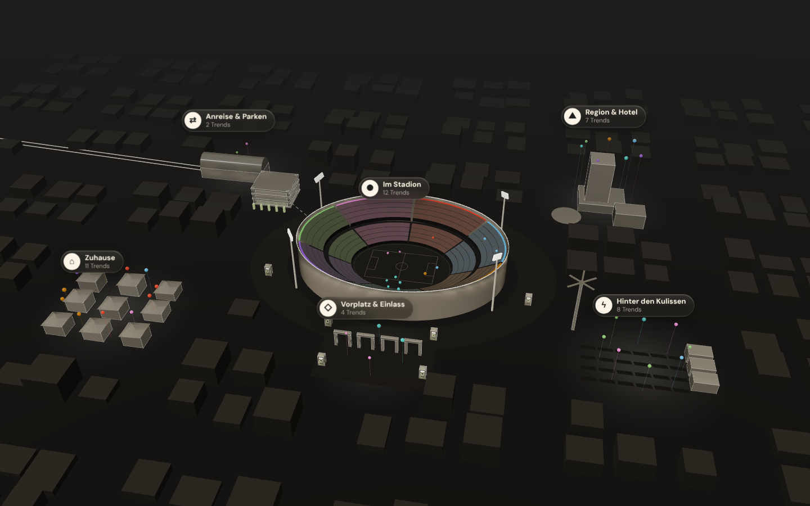
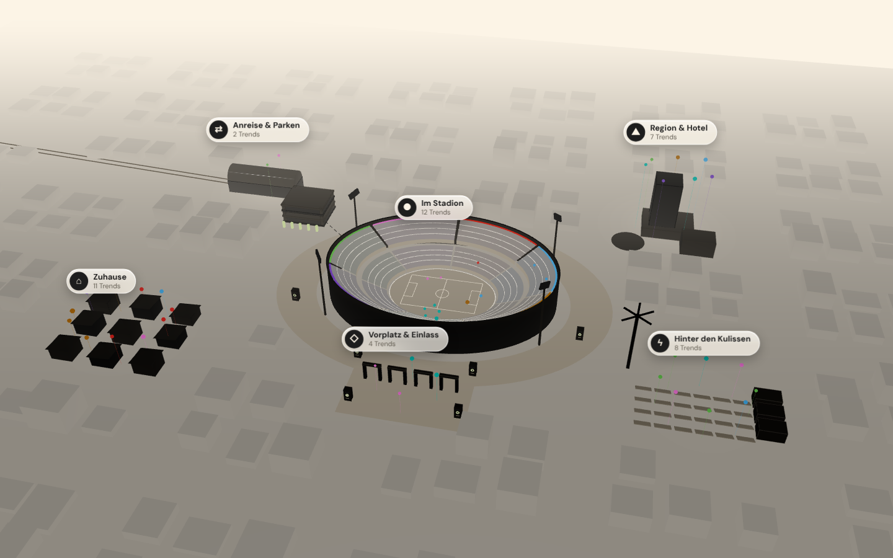

<meta charset="utf-8">
<title>Dashboard 3D · Entwurf 03</title>
<meta name="claude:viewport-fit-sides" content="cover">
<link rel="preconnect" href="https://fonts.googleapis.com">
<link rel="preconnect" href="https://fonts.gstatic.com" crossorigin>
<link rel="stylesheet" href="https://fonts.googleapis.com/css2?family=Archivo:wght@800&family=DM+Sans:opsz,wght@9..40,400;9..40,700&display=swap">
<style>
/* Layout: Entwurfsmappe – oben Reiter (Heute · A · B · C), je Reiter eine skalierte 1440er-Bühne bzw. 390er-Handy,
   darunter die Notizen. Tokens 1:1 aus app/globals.css (Dunkel Standard, Hell per data-theme="light"). */
:root {
  --bg: #1d1d1d; --surface: #2b2a27; --sunk: #242321; --line: #3d3b37;
  --ink: #fcf4e6; --text: #d9cfbd; --muted: #a8a195;
  --accent: #c2e689; --on-accent: #253912; --accent-ink: #c2e689; --logo: #f3efe6;
  --glass-tint: rgba(43, 42, 39, 0.38); --glass-tint-strong: rgba(36, 35, 33, 0.62);
  --glass-edge: rgba(252, 244, 230, 0.14); --glass-hi: rgba(252, 244, 230, 0.24);
  --glass-sheen: rgba(252, 244, 230, 0.08); --glass-shadow: 0 18px 50px rgba(0, 0, 0, 0.4);
  --cA: #c2402a; --cB: #4d9cd0; --cC: #9d6500; --cD: #2ca8a0; --cE: #7b57b9; --cF: #66a758; --cG: #ca6db8;
  --cA-fg: #fcf4e6; --cB-fg: #1d1d1d; --cC-fg: #fcf4e6; --cD-fg: #1d1d1d; --cE-fg: #fcf4e6; --cF-fg: #1d1d1d; --cG-fg: #1d1d1d;
  --font-display: "Archivo", "Arial Narrow", "Helvetica Neue", Arial, sans-serif;
  --font-sans: "DM Sans", "Segoe UI", system-ui, sans-serif;
  --radius-card: 16px; --radius-pill: 40px;
  color-scheme: dark;
}
@media (prefers-color-scheme: light) { :root:not([data-theme="dark"]) {
  --bg: #fcf4e6; --surface: #faf8f4; --sunk: #f2e5cf; --line: #e3d7c2;
  --ink: #1d1d1d; --text: #3d3b37; --muted: #655f55; --accent-ink: #4a6b1a; --logo: #1d1d1d;
  --glass-tint: rgba(252, 248, 240, 0.42); --glass-tint-strong: rgba(252, 248, 240, 0.72);
  --glass-edge: rgba(255, 255, 255, 0.75); --glass-hi: rgba(255, 255, 255, 0.95);
  --glass-sheen: rgba(255, 255, 255, 0.4); --glass-shadow: 0 18px 50px rgba(29, 29, 29, 0.14);
  --cA: #b6341f; --cB: #3e8cc9; --cC: #8f5d04; --cD: #009b92; --cE: #6a45a6; --cF: #549a44; --cG: #c562b2;
  color-scheme: light;
} }
:root[data-theme="light"] {
  --bg: #fcf4e6; --surface: #faf8f4; --sunk: #f2e5cf; --line: #e3d7c2;
  --ink: #1d1d1d; --text: #3d3b37; --muted: #655f55; --accent-ink: #4a6b1a; --logo: #1d1d1d;
  --glass-tint: rgba(252, 248, 240, 0.42); --glass-tint-strong: rgba(252, 248, 240, 0.72);
  --glass-edge: rgba(255, 255, 255, 0.75); --glass-hi: rgba(255, 255, 255, 0.95);
  --glass-sheen: rgba(255, 255, 255, 0.4); --glass-shadow: 0 18px 50px rgba(29, 29, 29, 0.14);
  --cA: #b6341f; --cB: #3e8cc9; --cC: #8f5d04; --cD: #009b92; --cE: #6a45a6; --cF: #549a44; --cG: #c562b2;
  color-scheme: light;
}

* { box-sizing: border-box; }
body { background: var(--bg); color: var(--text); font-family: var(--font-sans); font-size: 16px; line-height: 1.55; }
h1, h2, h3 { font-family: var(--font-display); font-weight: 800; color: var(--ink); letter-spacing: -0.014em; line-height: 1.1; text-wrap: balance; margin: 0; }
p { margin: 0; }
button { font: inherit; color: inherit; background: none; border: 0; cursor: pointer; padding: 0; }
:focus-visible { outline: 2px solid var(--accent); outline-offset: 2px; }
.eyebrow { font-weight: 700; font-size: 12px; letter-spacing: .125em; text-transform: uppercase; color: var(--accent-ink); }
.num { font-family: var(--font-display); font-weight: 800; font-variant-numeric: tabular-nums; }
.glass { background: linear-gradient(180deg, var(--glass-sheen), transparent 55%), var(--glass-tint);
  -webkit-backdrop-filter: blur(22px) saturate(170%); backdrop-filter: blur(22px) saturate(170%);
  border: 1px solid var(--glass-edge); box-shadow: inset 0 1px 0 var(--glass-hi), var(--glass-shadow); }
.glass-strong { background: linear-gradient(180deg, var(--glass-sheen), transparent 45%), var(--glass-tint-strong);
  -webkit-backdrop-filter: blur(28px) saturate(180%); backdrop-filter: blur(28px) saturate(180%);
  border: 1px solid var(--glass-edge); box-shadow: inset 0 1px 0 var(--glass-hi), var(--glass-shadow); }

/* ───── Mappe ───── */
.top { position: sticky; top: env(safe-area-inset-top, 0px); z-index: 20; border-bottom: 1px solid var(--line);
  background: var(--bg); padding-left: max(16px, env(safe-area-inset-left, 0px)); padding-right: max(16px, env(safe-area-inset-right, 0px)); }
body::before { content: ""; position: fixed; inset: 0 0 auto; height: env(safe-area-inset-top, 0px); z-index: 30; background: var(--bg); }
.top-in { max-width: 1440px; margin: 0 auto; display: flex; flex-wrap: wrap; align-items: center; gap: 12px 24px; padding-block: 12px; }
.brand { display: flex; align-items: center; gap: 12px; color: var(--logo); }
.brand svg { height: 22px; width: auto; }
.brand span { font-size: 13px; color: var(--muted); }
.tabs { display: flex; flex-wrap: wrap; gap: 4px; flex: 1; }
.tab { border-radius: var(--radius-pill); padding: 6px 14px; font-size: 14px; font-weight: 700; color: var(--ink); }
.tab:hover { background: var(--sunk); }
.tab[aria-current="page"] { background: var(--ink); color: var(--bg); }
.tools { display: flex; gap: 8px; flex-wrap: wrap; }
.seg { display: inline-flex; border-radius: var(--radius-pill); padding: 2px; border: 1px solid var(--line); }
.seg button { border-radius: var(--radius-pill); padding: 4px 12px; font-size: 13px; font-weight: 700; color: var(--ink); }
.seg button[aria-pressed="true"] { background: var(--ink); color: var(--bg); }

main { max-width: 1440px; margin: 0 auto; padding-left: max(16px, env(safe-area-inset-left, 0px)); padding-right: max(16px, env(safe-area-inset-right, 0px)); padding-block: 32px 64px; display: flex; flex-direction: column; gap: 32px; }
.intro { display: grid; grid-template-columns: minmax(0, 1fr) auto; gap: 16px 32px; align-items: end; }
.intro h1 { font-size: clamp(28px, 3.4vw, 44px); }
.intro p.lead { max-width: 68ch; margin-top: 8px; }
.state { display: flex; gap: 8px; flex-wrap: wrap; align-items: center; font-size: 13px; color: var(--muted); }
@media (max-width: 760px) { .intro { grid-template-columns: 1fr; } }

/* Bühne: 1440×900 (Desktop) bzw. 390×844 (Handy), skaliert auf die verfügbare Breite */
.stage { position: relative; width: 100%; max-width: 100%; border-radius: var(--radius-card); overflow: hidden; border: 1px solid var(--line); background: var(--bg); }
.stage.desk { aspect-ratio: 1440 / 900; }
.stage.phone { aspect-ratio: 390 / 844; width: min(100%, 390px); margin: 0 auto; border-radius: 32px; }
.canvas { position: absolute; left: 0; top: 0; transform-origin: 0 0; transform: scale(var(--s, 1)); overflow: hidden; background: var(--bg); }
.desk .canvas { width: 1440px; height: 900px; }
.phone .canvas { width: 390px; height: 844px; }
.pair { display: grid; grid-template-columns: minmax(0, 1fr) 300px; gap: 24px; align-items: start; }
@media (max-width: 1000px) { .pair { grid-template-columns: 1fr; } }
.shot { width: 100%; display: block; border-radius: var(--radius-card); border: 1px solid var(--line); }

.notes { display: grid; grid-template-columns: repeat(auto-fit, minmax(240px, 1fr)); gap: 24px; }
.note { display: flex; flex-direction: column; gap: 8px; min-width: 0; }
.note h3 { font-size: 20px; }
.note ul { margin: 0; padding-left: 18px; display: flex; flex-direction: column; gap: 6px; }
.note .eyebrow { color: var(--muted); }
.facts { display: flex; flex-wrap: wrap; gap: 8px; }
.fact { border: 1px solid var(--line); border-radius: var(--radius-pill); padding: 4px 12px; font-size: 13px; color: var(--text); }
.fact b { color: var(--ink); }
.cmp { overflow-x: auto; }
.cmp table { border-collapse: collapse; width: 100%; min-width: 640px; font-size: 14px; }
.cmp th, .cmp td { text-align: left; padding: 10px 12px; border-bottom: 1px solid var(--line); vertical-align: top; }
.cmp th { color: var(--muted); font-weight: 700; font-size: 12px; letter-spacing: .1em; text-transform: uppercase; }
.cmp td:first-child { color: var(--ink); font-weight: 700; }
.reco { border: 1px solid var(--line); border-radius: var(--radius-card); padding: 24px; display: flex; flex-direction: column; gap: 8px; background: var(--surface); }
.reco p { max-width: 75ch; }

/* ───── Bühne: nachgebaute App-Oberfläche ───── */
.world { position: absolute; left: 0; top: 0; width: 1440px; height: 900px; transform-origin: 0 0; }
.world img { position: absolute; inset: 0; width: 100%; height: 100%; display: block; }
.world .scene-light { display: none; }
html[data-mode="light"] .world .scene-dark { display: none; }
html[data-mode="light"] .world .scene-light { display: block; }
.pulse { position: absolute; width: 14px; height: 14px; margin: -7px 0 0 -7px; border-radius: 50%; border: 2px solid var(--ink); }
.pulse::after { content: ""; position: absolute; inset: -2px; border-radius: 50%; border: 2px solid var(--ink); animation: ping 1.8s ease-out infinite; }
@keyframes ping { from { transform: scale(1); opacity: .9; } to { transform: scale(3); opacity: 0; } }
@media (prefers-reduced-motion: reduce) { .pulse::after, .ping::after { animation: none; } }

.m-head { position: absolute; inset: 0 0 auto; height: 60px; display: flex; align-items: center; gap: 24px; padding: 0 32px 0 92px; z-index: 5;
  border-bottom: 1px solid var(--glass-edge); background: var(--glass-tint-strong); -webkit-backdrop-filter: blur(22px); backdrop-filter: blur(22px); }
.m-head .logo { color: var(--logo); display: flex; align-items: center; gap: 12px; font-size: 14px; }
.m-head .logo svg { height: 26px; width: auto; }
.m-head .logo span { color: var(--muted); }
.m-nav { display: flex; gap: 4px; font-size: 14px; font-weight: 700; color: var(--ink); }
.m-nav span { padding: 6px 12px; border-radius: var(--radius-pill); }
.m-nav span.on { background: var(--ink); color: var(--bg); }
.m-user { margin-left: auto; display: flex; align-items: center; gap: 16px; font-size: 13px; color: var(--muted); }
.m-user b { color: var(--ink); }
.m-user .due { border: 1px solid var(--glass-edge); border-radius: var(--radius-pill); padding: 4px 10px; }
.m-user .due b { font-weight: 700; }

.ui { position: absolute; z-index: 4; color: var(--ink); font-size: 14px; }
.pill { border-radius: var(--radius-pill); padding: 6px 16px; font-weight: 700; color: var(--ink); display: inline-flex; align-items: center; gap: 8px; white-space: nowrap; }
.mseg { display: inline-flex; border-radius: var(--radius-pill); padding: 2px; }
.mseg span, .mseg button { border-radius: var(--radius-pill); padding: 5px 14px; font-weight: 700; color: var(--ink); white-space: nowrap; }
.mseg .on { background: var(--ink); color: var(--bg); }
.sep { width: 1px; align-self: stretch; margin: 6px 4px; background: var(--glass-edge); }
.ico { width: 16px; height: 16px; flex: none; }

.phases { display: flex; overflow: hidden; border-radius: var(--radius-card); }
.phases > div { display: flex; flex-direction: column; padding: 12px 16px; min-width: 150px; }
.phases dt { font-weight: 700; font-size: 10px; letter-spacing: .125em; text-transform: uppercase; color: var(--muted); }
.phases dd { margin: 0; font-family: var(--font-display); font-weight: 800; font-size: 30px; line-height: 1; color: var(--ink); font-variant-numeric: tabular-nums; }
.phases .kick { background: var(--accent); }
.phases .kick dt, .phases .kick dd { color: var(--on-accent); }
.found { border-radius: var(--radius-pill); padding: 6px 16px; font-size: 14px; color: var(--muted); }
.found b { color: var(--ink); font-family: var(--font-display); }

.chip { display: inline-flex; align-items: center; gap: 6px; border: 1px solid var(--line); border-radius: var(--radius-pill); padding: 1px 10px 1px 3px; font-size: 12px; font-weight: 700; color: var(--ink); white-space: nowrap; }
.chip i { font-style: normal; display: inline-grid; place-items: center; width: 18px; height: 18px; border-radius: 50%; font-size: 10px; font-weight: 800; font-family: var(--font-display); }
.badge-new { position: relative; display: inline-flex; align-items: center; gap: 6px; border-radius: var(--radius-pill); background: var(--ink); color: var(--bg); padding: 2px 10px; font-size: 11px; font-weight: 700; letter-spacing: .08em; text-transform: uppercase; white-space: nowrap; }
.badge-new::before { content: ""; width: 6px; height: 6px; border-radius: 50%; background: var(--bg); }
.ping::after { content: ""; position: absolute; inset: 0; border-radius: inherit; border: 2px solid var(--ink); animation: ping 1.8s ease-out infinite; }
.newdot { width: 7px; height: 7px; border-radius: 50%; background: var(--ink); flex: none; }

.tk-head { display: flex; align-items: center; justify-content: space-between; gap: 12px; }
.tk-title { display: flex; align-items: center; gap: 8px; font-weight: 700; font-size: 12px; letter-spacing: .125em; text-transform: uppercase; color: var(--ink); }
.tk-title::before { content: ""; width: 8px; height: 8px; border-radius: 50%; background: var(--ink); }
.round { display: inline-grid; place-items: center; width: 28px; height: 28px; border-radius: 50%; border: 1px solid var(--line); color: var(--ink); font-size: 14px; }
.meta { font-size: 12px; color: var(--muted); }
.meta b { color: var(--ink); }
.hl { font-weight: 700; color: var(--ink); line-height: 1.35; }
.foot { font-size: 11px; color: var(--muted); }
.select { display: inline-flex; align-items: center; gap: 6px; border: 1px solid var(--line); border-radius: var(--radius-pill); padding: 3px 12px; font-size: 12px; font-weight: 700; color: var(--ink); }

/* Popover A */
.pop { position: absolute; z-index: 6; border-radius: var(--radius-card); padding: 16px; width: 300px; display: flex; flex-direction: column; gap: 14px; color: var(--text); font-size: 13px; }
.pop .eyebrow { color: var(--muted); font-size: 10px; }
</style>

<header class="top">
  <div class="top-in">
    <div class="brand"><svg role="img" aria-label="New Spice" viewBox="0 0 535 212" fill="none" xmlns="http://www.w3.org/2000/svg"><path d="M534.427 139.758H466.278V148.893H534.427V172.803H466.278V181.938H534.427V210.063H429.357V111.633H534.427V139.758Z" fill="currentColor"/><path d="M299.594 160.713C299.594 126.543 318.164 110.223 361.469 110.223C400.843 110.223 421.378 124.008 422.923 155.088H385.513C384.103 145.803 376.934 141.168 361.469 141.168C339.809 141.168 336.148 150.303 336.148 160.713C336.148 171.123 339.944 180.543 361.469 180.543C376.934 180.543 384.103 175.758 385.513 166.338H422.923C421.378 197.553 400.993 211.473 361.469 211.473C318.149 211.473 299.594 195.018 299.594 160.713Z" fill="currentColor"/><path d="M292.498 111.633V210.063H255.928V111.633H292.498Z" fill="currentColor"/><path d="M211.793 111.633C234.158 111.633 249.473 127.383 249.473 149.313C249.473 171.243 234.143 186.993 211.793 186.993H171.008V210.063H134.438V111.633H211.778H211.793ZM204.758 156.063C208.418 156.063 212.918 156.063 212.918 149.313C212.918 142.563 208.418 142.563 204.758 142.563H171.008V156.063H204.758Z" fill="currentColor"/><path d="M0.25 175.338H37.3982C37.3982 180.123 41.9712 183.348 65.5527 183.348C87.5642 183.348 90.8415 181.938 90.8415 178.278C90.8415 174.063 87.5489 173.493 64.1198 172.788C18.9689 171.378 1.66764 164.073 1.66764 141.153C1.66764 119.493 23.2523 110.223 62.6869 110.223C102.122 110.223 123.706 119.508 123.706 144.678H86.5581C86.5581 139.473 77.9913 138.348 59.8364 138.348C41.6815 138.348 38.831 139.188 38.831 142.983C38.831 146.778 42.398 146.643 64.1198 147.483C103.57 149.028 128.005 151.698 128.005 177.438C128.005 204.573 105.14 211.473 64.1198 211.473C23.0999 211.473 0.25 204.588 0.25 175.338Z" fill="currentColor"/><path d="M409.445 0.632812H448.685L416.345 99.0629H362.06L345.89 42.3928L329.72 99.0629H275.435L243.095 0.632812H282.335L302.72 70.0978L324.095 0.632812H367.685L389.06 70.0978L409.445 0.632812Z" fill="currentColor"/><path d="M238.367 28.7578H170.867V37.8928H238.367V61.8028H170.867V70.9378H238.367V99.0629H134.297V0.632812H238.367V28.7578Z" fill="currentColor"/><path d="M91.4499 0.632812H128.005V99.0629H80.1999L37.7349 40.9828V99.0629H1.17993V0.632812H48.9849L91.4499 58.7128V0.632812Z" fill="currentColor"/><path d="M475.236 20.073H472.011L468.366 15.048H466.521V20.073H463.851V6.33301H469.341C472.461 6.33301 474.381 7.99801 474.381 10.773C474.381 12.798 473.151 14.268 471.201 14.808L475.221 20.073H475.236ZM469.206 8.71801H466.521V12.813H469.206C470.691 12.813 471.576 12.123 471.576 10.773C471.576 9.42301 470.676 8.71801 469.206 8.71801Z" fill="currentColor"/><path fill-rule="evenodd" clip-rule="evenodd" d="M468.561 25.6828C474.966 25.6828 480.156 20.4928 480.156 14.0878C480.156 7.68284 474.966 2.49283 468.561 2.49283C462.156 2.49283 456.966 7.68284 456.966 14.0878C456.966 20.4928 462.156 25.6828 468.561 25.6828ZM468.561 27.6478C476.046 27.6478 482.121 21.5728 482.121 14.0878C482.121 6.60284 476.046 0.527832 468.561 0.527832C461.076 0.527832 455.001 6.60284 455.001 14.0878C455.001 21.5728 461.076 27.6478 468.561 27.6478Z" fill="currentColor"/></svg><span>Entwurf 03 · Dashboard (3D) · Runde 1, grob</span></div>
    <nav class="tabs" aria-label="Ansicht der Mappe">
      <a class="tab" href="#heute" data-v="heute">Heute</a>
      <a class="tab" href="#a" data-v="a">A · Eine Leiste</a>
      <a class="tab" href="#b" data-v="b">B · Geteilt</a>
      <a class="tab" href="#c" data-v="c">C · Szene zuerst</a>
      <a class="tab" href="#vergleich" data-v="vergleich">Vergleich</a>
    </nav>
    <div class="tools">
      <div class="seg" role="group" aria-label="Gerät">
        <button type="button" id="dev-desk" data-dev="desk" aria-pressed="true">Desktop 1440</button>
        <button type="button" id="dev-phone" data-dev="phone" aria-pressed="false">Handy 390</button>
      </div>
      <div class="seg" role="group" aria-label="Darstellung">
        <button type="button" id="th-dark" data-th="dark">Dunkel</button>
        <button type="button" id="th-light" data-th="light">Hell</button>
      </div>
    </div>
  </div>
</header>

<main id="main"></main>

<script>
const LOGO = `<svg role="img" aria-label="New Spice" viewBox="0 0 535 212" fill="none" xmlns="http://www.w3.org/2000/svg"><path d="M534.427 139.758H466.278V148.893H534.427V172.803H466.278V181.938H534.427V210.063H429.357V111.633H534.427V139.758Z" fill="currentColor"/><path d="M299.594 160.713C299.594 126.543 318.164 110.223 361.469 110.223C400.843 110.223 421.378 124.008 422.923 155.088H385.513C384.103 145.803 376.934 141.168 361.469 141.168C339.809 141.168 336.148 150.303 336.148 160.713C336.148 171.123 339.944 180.543 361.469 180.543C376.934 180.543 384.103 175.758 385.513 166.338H422.923C421.378 197.553 400.993 211.473 361.469 211.473C318.149 211.473 299.594 195.018 299.594 160.713Z" fill="currentColor"/><path d="M292.498 111.633V210.063H255.928V111.633H292.498Z" fill="currentColor"/><path d="M211.793 111.633C234.158 111.633 249.473 127.383 249.473 149.313C249.473 171.243 234.143 186.993 211.793 186.993H171.008V210.063H134.438V111.633H211.778H211.793ZM204.758 156.063C208.418 156.063 212.918 156.063 212.918 149.313C212.918 142.563 208.418 142.563 204.758 142.563H171.008V156.063H204.758Z" fill="currentColor"/><path d="M0.25 175.338H37.3982C37.3982 180.123 41.9712 183.348 65.5527 183.348C87.5642 183.348 90.8415 181.938 90.8415 178.278C90.8415 174.063 87.5489 173.493 64.1198 172.788C18.9689 171.378 1.66764 164.073 1.66764 141.153C1.66764 119.493 23.2523 110.223 62.6869 110.223C102.122 110.223 123.706 119.508 123.706 144.678H86.5581C86.5581 139.473 77.9913 138.348 59.8364 138.348C41.6815 138.348 38.831 139.188 38.831 142.983C38.831 146.778 42.398 146.643 64.1198 147.483C103.57 149.028 128.005 151.698 128.005 177.438C128.005 204.573 105.14 211.473 64.1198 211.473C23.0999 211.473 0.25 204.588 0.25 175.338Z" fill="currentColor"/><path d="M409.445 0.632812H448.685L416.345 99.0629H362.06L345.89 42.3928L329.72 99.0629H275.435L243.095 0.632812H282.335L302.72 70.0978L324.095 0.632812H367.685L389.06 70.0978L409.445 0.632812Z" fill="currentColor"/><path d="M238.367 28.7578H170.867V37.8928H238.367V61.8028H170.867V70.9378H238.367V99.0629H134.297V0.632812H238.367V28.7578Z" fill="currentColor"/><path d="M91.4499 0.632812H128.005V99.0629H80.1999L37.7349 40.9828V99.0629H1.17993V0.632812H48.9849L91.4499 58.7128V0.632812Z" fill="currentColor"/><path d="M475.236 20.073H472.011L468.366 15.048H466.521V20.073H463.851V6.33301H469.341C472.461 6.33301 474.381 7.99801 474.381 10.773C474.381 12.798 473.151 14.268 471.201 14.808L475.221 20.073H475.236ZM469.206 8.71801H466.521V12.813H469.206C470.691 12.813 471.576 12.123 471.576 10.773C471.576 9.42301 470.676 8.71801 469.206 8.71801Z" fill="currentColor"/><path fill-rule="evenodd" clip-rule="evenodd" d="M468.561 25.6828C474.966 25.6828 480.156 20.4928 480.156 14.0878C480.156 7.68284 474.966 2.49283 468.561 2.49283C462.156 2.49283 456.966 7.68284 456.966 14.0878C456.966 20.4928 462.156 25.6828 468.561 25.6828ZM468.561 27.6478C476.046 27.6478 482.121 21.5728 482.121 14.0878C482.121 6.60284 476.046 0.527832 468.561 0.527832C461.076 0.527832 455.001 6.60284 455.001 14.0878C455.001 21.5728 461.076 27.6478 468.561 27.6478Z" fill="currentColor"/></svg>`;
const CL = { A: "Fan & Guest Experience", B: "AI, Data & Technology", C: "Business Models & Monetization", D: "Venues & Smart Infrastructure", E: "Culture, Lifestyle & Community", F: "Sustainability & Resources", G: "Safety, Inclusion & Participation" };
// Beispielmeldungen (wie im Testmodus) – Trends echt aus seed/trends.json
const T = [
  { day: "Heute", t: "09:12", neu: true, src: "Beispielmedium", title: "Bundesliga-Club testet Bestellung am Platz per App", sum: "Getränke kommen direkt an den Sitz, zunächst in zwei Blöcken der Haupttribüne.", n: 24, c: "D", name: "Mobile Order & In-Seat", x: 706, y: 497 },
  { day: "Heute", t: "07:40", neu: true, src: "Beispiel-Startupmedium", title: "Münchner Startup sammelt 6 Mio. € für Kassen ohne Warteschlange", sum: "Kamerabasierte Kasse, erste Piloten in Kantinen und Arenen.", n: 19, c: "D", name: "Checkout-freie Gastronomie", x: 754, y: 487 },
  { day: "Gestern", t: "16:05", src: "Beispielverband", title: "Neue Studie zu Fan-Anreise mit ÖPNV", sum: "Kombitickets erhöhen den ÖPNV-Anteil am Spieltag deutlich.", n: 32, c: "F", name: "Green Fan Mobility" },
  { day: "Diese Woche", t: "Mo", src: "Beispiel-Reisemedium", title: "Flughafen testet Boarding per Gesichtserkennung", sum: "Ohne Bordkarte zum Gate – übertragbar auf den Stadioneinlass.", n: 18, c: "D", name: "Biometrischer Zugang" },
  { day: "Früher", t: "31.10.", src: "Beispielmedium", title: "Arena setzt auf Batteriespeicher für Flutlicht", sum: "Der Speicher puffert die Lastspitzen am Abend.", n: 34, c: "F", name: "Energiespeicher & EMS" },
  { day: "Früher", t: "29.10.", src: "Beispiel-Startupmedium", title: "KI erkennt Warteschlangen an Bierständen in Echtzeit", sum: "Kameras zählen, die App schickt Fans zum kürzesten Stand.", n: 37, c: "G", name: "KI-Crowd-Management" },
];
const NEW = T.filter((x) => x.neu).length;
const chip = (x) => `<span class="chip"><i style="background:var(--c${x.c});color:var(--c${x.c}-fg)">${x.c}</i>#${x.n} ${x.name}</span>`;
const ic = {
  chev: `<svg class="ico" viewBox="0 0 16 16" fill="none" stroke="currentColor" stroke-width="1.8"><path d="M4 6l4 4 4-4"/></svg>`,
  play: `<svg class="ico" viewBox="0 0 16 16" fill="currentColor"><path d="M5 3.5v9l7.5-4.5z"/></svg>`,
  filt: `<svg class="ico" viewBox="0 0 16 16" fill="none" stroke="currentColor" stroke-width="1.8"><path d="M2 4h12M4.5 8h7M7 12h2"/></svg>`,
  search: `<svg class="ico" viewBox="0 0 16 16" fill="none" stroke="currentColor" stroke-width="1.8"><circle cx="7" cy="7" r="4.5"/><path d="M10.5 10.5L14 14"/></svg>`,
  exit: `<svg class="ico" viewBox="0 0 16 16" fill="none" stroke="currentColor" stroke-width="1.6"><path d="M6 3H3v10h3M10 5l3 3-3 3M13 8H6"/></svg>`,
  bell: `<svg class="ico" viewBox="0 0 16 16" fill="none" stroke="currentColor" stroke-width="1.6"><path d="M4 11V7a4 4 0 018 0v4l1 1.5H3zM6.5 14h3"/></svg>`,
};

const state = { view: "heute", dev: "desk", open: { a: true, b: true, c: true }, pop: false };

/* ───── gemeinsame Bausteine der Bühne ───── */
function world(shift = 0, scale = 1, top = 0, pulses = true) {
  const p = pulses ? T.filter((x) => x.neu).map((x) => `<span class="pulse" style="left:${x.x}px;top:${x.y}px"></span>`).join("") : "";
  return `<div class="world" style="transform:translate(${shift}px,${top}px) scale(${scale})">
    
    ${p}</div>`;
}
function head() {
  return `<div class="m-head"><span class="logo">${LOGO}<span>Trendradar</span></span>
    <span class="m-nav"><span class="on">Dashboard (3D)</span><span>2D-Ansicht</span><span>News-Ticker</span><span>Projekte</span></span>
    <span class="m-user"><span class="due">Zugang endet in <b>21 Tagen</b></span><span>Hell</span><span><b>Kunde A · Member</b></span><span>Abmelden</span></span></div>`;
}
function phead() {
  return `<div class="m-head" style="height:56px;padding:0 12px;gap:8px"><span class="logo">${LOGO.replace("<svg", '<svg style="height:20px"')}</span>
    <span class="m-nav" style="font-size:13px;gap:0"><span class="on">3D</span><span>2D</span><span>News</span><span>Projekte</span></span>
    <span class="m-user" style="gap:0"><span class="round">${ic.exit}</span></span></div>`;
}
function phases(extra = "") {
  return `<dl class="phases glass" style="margin:0">
    <div class="kick"><dt>Anstoß · Spielfeld</dt><dd>18</dd></div>
    <div><dt>Aufwärmen · Unterrang</dt><dd>18</dd></div>
    <div><dt>Scouting · Oberrang</dt><dd>8</dd></div>${extra}</dl>`;
}
function phasesSmall() {
  return `<dl class="phases glass" style="margin:0">
    <div class="kick" style="min-width:0;flex:1;padding:8px 12px"><dt style="font-size:9px">Anstoß</dt><dd style="font-size:24px">18</dd></div>
    <div style="min-width:0;flex:1;padding:8px 12px"><dt style="font-size:9px">Aufwärmen</dt><dd style="font-size:24px">18</dd></div>
    <div style="min-width:0;flex:1;padding:8px 12px"><dt style="font-size:9px">Scouting</dt><dd style="font-size:24px">8</dd></div></dl>`;
}
const found = (hint = true) => `<p class="found glass"><b>7</b> von 44 entdeckt${hint ? " · Ort anklicken oder ins Stadion gehen" : ""}</p>`;
const toggleBtn = (v, label, extra = "") => `<button type="button" data-toggle="${v}" class="${extra}">${label}</button>`;

/* ───── Variante A: Eine Leiste ───── */
function A_desk() {
  const o = state.open.a;
  const list = T.map((x) => `<li style="display:flex;flex-direction:column;gap:4px;padding:10px 0;border-bottom:1px solid var(--line)">
      <span class="meta" style="display:flex;align-items:center;gap:6px">${x.neu ? '<span class="newdot"></span><b>' + x.day + " " + x.t + "</b>" : x.day + " " + x.t} · ${x.src}</span>
      <span class="hl" style="font-size:14px">${x.title} <span style="color:var(--muted)">↗</span></span>
      <span>${chip(x)}</span></li>`).join("");
  const col = o
    ? `<aside class="ui glass-strong" style="right:16px;top:76px;bottom:16px;width:320px;border-radius:16px;display:flex;flex-direction:column">
        <div style="padding:16px 16px 12px;display:flex;flex-direction:column;gap:10px;border-bottom:1px solid var(--line)">
          <div class="tk-head"><span class="tk-title">Liveticker</span><span style="display:flex;gap:8px;align-items:center"><span class="meta"><b>${NEW}</b> neu</span>${toggleBtn("a", "›", "round")}</span></div>
          <span class="select">Alle Themen ${ic.chev}</span></div>
        <ol style="list-style:none;margin:0;padding:0 16px;overflow:hidden;flex:1">${list}</ol>
        <p class="foot" style="padding:10px 16px;border-top:1px solid var(--line)">Beispielmeldungen · von Scouts gefunden, von der Redaktion geprüft</p></aside>`
    : `<aside class="ui" style="right:16px;top:76px;width:48px;display:flex;flex-direction:column;align-items:center;gap:10px">
        ${toggleBtn("a", `<span class="glass-strong" style="display:flex;flex-direction:column;align-items:center;gap:12px;padding:12px 0;width:48px;border-radius:24px">
          <span class="badge-new ping" style="padding:2px 7px">${NEW}</span>
          <span style="writing-mode:vertical-rl;transform:rotate(180deg);font-weight:700;font-size:12px;letter-spacing:.125em;text-transform:uppercase">Liveticker</span>
          <span style="font-size:16px">‹</span></span>`)}</aside>`;
  const pop = state.pop ? `<div class="pop glass-strong" style="left:250px;top:132px">
      <div style="display:flex;flex-direction:column;gap:6px"><span class="eyebrow">Zielgruppe</span>
        <span class="mseg glass"><span class="on">Alle</span><span>Hospitality</span><span>Public</span></span></div>
      <div style="display:flex;flex-direction:column;gap:6px"><span class="eyebrow">Perspektive</span>
        <span class="mseg glass"><span class="on">Europa / DACH</span><span>Global</span></span>
        <span class="meta">Global zeigt die weltweite Einordnung; Trends können die Spielphase wechseln.</span></div>
      <span class="meta">Zurücksetzen</span></div>` : "";
  return `${world(o ? -150 : 0)}${head()}
    <div class="ui glass" style="left:32px;top:84px;display:flex;align-items:center;border-radius:40px;padding:3px">
      <span class="mseg"><span class="on">Journey</span><span>Radar</span></span><span class="sep"></span>
      <button type="button" data-pop="1" class="pill" style="padding:5px 12px">${ic.filt} Alle · Europa ${ic.chev}</button><span class="sep"></span>
      <span class="pill" style="padding:5px 14px">${ic.play} Tour</span></div>${pop}
    <div class="ui" style="left:32px;bottom:28px">${phases()}</div>
    <div class="ui" style="right:${o ? 352 : 80}px;bottom:28px">${found()}</div>${col}`;
}
function A_phone() {
  const o = state.open.a;
  const sheet = o
    ? `<div class="ui glass-strong" style="left:0;right:0;bottom:0;height:470px;border-radius:24px 24px 0 0;display:flex;flex-direction:column;padding:8px 16px 0">
        <span style="align-self:center;width:40px;height:4px;border-radius:4px;background:var(--line)"></span>
        <div class="tk-head" style="padding:10px 0"><span class="tk-title">Liveticker</span><span style="display:flex;gap:8px;align-items:center"><span class="select">Alle Themen ${ic.chev}</span>${toggleBtn("a", "×", "round")}</span></div>
        <ol style="list-style:none;margin:0;padding:0;overflow:hidden">${T.slice(0, 4).map((x) => `<li style="display:flex;flex-direction:column;gap:4px;padding:10px 0;border-bottom:1px solid var(--line)"><span class="meta" style="display:flex;gap:6px;align-items:center">${x.neu ? '<span class="newdot"></span><b>' + x.day + "</b>" : x.day} · ${x.src}</span><span class="hl" style="font-size:14px">${x.title}</span><span>${chip(x)}</span></li>`).join("")}</ol></div>`
    : `<div class="ui" style="left:12px;right:12px;bottom:12px;display:flex;flex-direction:column;gap:8px">${phasesSmall()}
        ${toggleBtn("a", `<span class="glass-strong" style="display:flex;align-items:center;gap:10px;border-radius:40px;padding:6px 14px 6px 6px;width:366px;text-align:left"><span class="badge-new ping">Neu · ${NEW}</span><span class="hl" style="font-size:13px;white-space:nowrap;overflow:hidden;text-overflow:ellipsis;flex:1">${T[0].title}</span><span>⌃</span></span>`)}</div>`;
  return `${world(-482, .94, 0)}${phead()}
    <div class="ui glass" style="left:12px;top:68px;right:12px;display:flex;align-items:center;border-radius:40px;padding:3px">
      <span class="mseg" style="font-size:13px"><span class="on">Journey</span><span>Radar</span></span><span class="sep"></span>
      <span class="pill" style="padding:5px 10px;font-size:13px">${ic.filt} Filter</span><span class="sep"></span>
      <span class="pill" style="padding:5px 10px;font-size:13px">${ic.play} Tour</span></div>${sheet}`;
}

/* ───── Variante B: Geteilt (Modus oben, Filter am Zähler, Ticker angedockt) ───── */
function B_desk() {
  const o = state.open.b;
  const groups = ["Heute", "Gestern", "Diese Woche", "Früher"].map((g) => {
    const it = T.filter((x) => x.day === g);
    return `<li style="list-style:none"><p class="eyebrow" style="color:var(--muted);font-size:10px;padding:14px 0 4px">${g}</p><ol style="list-style:none;margin:0;padding:0">${it.map((x) => `
      <li style="display:flex;flex-direction:column;gap:6px;padding:10px 12px;margin:0 -12px;border-radius:12px;${x.neu ? "background:var(--sunk)" : ""}">
        <span class="meta" style="display:flex;gap:6px;align-items:center">${x.neu ? '<span class="newdot"></span><b>Neu</b> · ' : ""}${x.t} · ${x.src}</span>
        <span class="hl" style="font-size:15px">${x.title} <span style="color:var(--muted)">↗</span></span>
        ${x.day === "Früher" ? "" : `<span style="font-size:13px;line-height:1.45">${x.sum}</span>`}
        <span>${chip(x)}</span></li>`).join("")}</ol></li>`;
  }).join("");
  const col = o
    ? `<aside class="ui" style="right:0;top:60px;bottom:0;width:400px;background:var(--bg);border-left:1px solid var(--line);display:flex;flex-direction:column">
        <div style="padding:20px 24px 14px;display:flex;flex-direction:column;gap:10px;border-bottom:1px solid var(--line)">
          <div class="tk-head"><span class="tk-title">Liveticker</span>${toggleBtn("b", "»", "round")}</div>
          <h3 style="font-size:24px">Neu aus dem Scouting</h3>
          <div style="display:flex;justify-content:space-between;align-items:center"><span class="select">Alle Themen ${ic.chev}</span><span class="meta"><b>${NEW}</b> ungelesen · Alle gelesen</span></div></div>
        <ol style="margin:0;padding:0 24px;overflow:hidden;flex:1">${groups}</ol>
        <p class="foot" style="padding:12px 24px;border-top:1px solid var(--line)">Beispielmeldungen · Links führen zur Originalquelle</p></aside>`
    : `<div class="ui" style="right:32px;bottom:92px">${toggleBtn("b", `<span class="glass-strong" style="display:flex;align-items:center;gap:12px;border-radius:40px;padding:6px 16px 6px 6px;max-width:520px"><span class="badge-new ping">Neu · ${NEW}</span><span class="hl" style="white-space:nowrap;overflow:hidden;text-overflow:ellipsis"><span style="color:var(--muted);font-weight:400">Heute · </span>${T[0].title}</span><span style="color:var(--muted)">«</span></span>`)}</div>`;
  const W = o ? 1040 : 1440;
  return `${world(o ? -200 : 0)}${head()}
    <div class="ui" style="left:330px;width:${W - 330 - 32}px;top:84px;display:flex;justify-content:center">
      <span class="mseg glass" style="font-size:16px;padding:3px"><span class="on" style="padding:8px 22px">Journey · Customer Journey</span><span style="padding:8px 22px">Radar · Im Stadion</span></span></div>
    <div class="ui" style="left:32px;top:84px"><span class="pill glass" style="padding:8px 16px">${ic.play} Tour „Ein Spieltag 2030“</span></div>
    <div class="ui glass" style="left:32px;bottom:28px;border-radius:16px;overflow:hidden">
      <div style="display:flex;gap:16px;align-items:center;padding:10px 12px 10px 16px;border-bottom:1px solid var(--glass-edge);font-size:13px">
        <span class="eyebrow" style="color:var(--muted);font-size:10px">Für</span><span class="mseg"><span class="on" style="padding:3px 12px">Alle</span><span style="padding:3px 12px">Hospitality</span><span style="padding:3px 12px">Public</span></span>
        <span class="eyebrow" style="color:var(--muted);font-size:10px">Sicht</span><span class="mseg"><span class="on" style="padding:3px 12px">Europa</span><span style="padding:3px 12px">Global</span></span></div>
      <div style="border-radius:0">${phases().replace("phases glass", "phases").replace('style="margin:0"', 'style="margin:0;border-radius:0"')}</div></div>
    <div class="ui" style="right:${o ? 432 : 32}px;bottom:28px">${found(!o)}</div>${col}`;
}
function B_phone() {
  const o = state.open.b;
  const full = o ? `<div class="ui" style="left:0;right:0;top:56px;bottom:0;background:var(--bg);padding:16px;display:flex;flex-direction:column;gap:8px">
      <div class="tk-head"><span class="tk-title">Liveticker</span>${toggleBtn("b", "×", "round")}</div>
      <h3 style="font-size:22px">Neu aus dem Scouting</h3><span class="select" style="align-self:flex-start">Alle Themen ${ic.chev}</span>
      <ol style="list-style:none;margin:0;padding:0;overflow:hidden">${T.slice(0, 4).map((x) => `<li style="display:flex;flex-direction:column;gap:5px;padding:10px 12px;margin:0 -12px;border-radius:12px;${x.neu ? "background:var(--sunk)" : ""}"><span class="meta">${x.neu ? "<b>Neu</b> · " : ""}${x.day} · ${x.src}</span><span class="hl" style="font-size:14px">${x.title}</span><span style="font-size:13px">${x.sum}</span><span>${chip(x)}</span></li>`).join("")}</ol></div>` : "";
  return `${world(-482, .94, 0)}${phead()}
    <div class="ui" style="left:12px;right:12px;top:68px;display:flex;justify-content:center"><span class="mseg glass" style="padding:3px;width:100%"><span class="on" style="flex:1;text-align:center;padding:7px">Journey</span><span style="flex:1;text-align:center;padding:7px">Radar</span></span></div>
    <div class="ui" style="left:12px;top:118px"><span class="pill glass" style="padding:5px 12px;font-size:13px">${ic.play} Tour</span></div>
    <div class="ui" style="left:12px;right:12px;bottom:12px;display:flex;flex-direction:column;gap:8px">
      ${toggleBtn("b", `<span class="glass-strong" style="display:flex;align-items:center;gap:10px;border-radius:40px;padding:6px 14px 6px 6px;width:366px;text-align:left"><span class="badge-new ping">Neu · ${NEW}</span><span class="hl" style="font-size:13px;white-space:nowrap;overflow:hidden;text-overflow:ellipsis;flex:1">${T[0].title}</span></span>`)}
      <div class="glass" style="border-radius:16px;overflow:hidden"><div style="display:flex;gap:6px;padding:8px;font-size:12px;border-bottom:1px solid var(--glass-edge)"><span class="mseg"><span class="on" style="padding:2px 10px">Alle</span><span style="padding:2px 10px">Hosp.</span><span style="padding:2px 10px">Public</span></span><span class="mseg"><span class="on" style="padding:2px 10px">EU</span><span style="padding:2px 10px">Global</span></span></div>
      ${phasesSmall().replace("phases glass", "phases").replace('style="margin:0"', 'style="margin:0;border-radius:0"')}</div></div>${full}`;
}

/* ───── Variante C: Szene zuerst (Mini-Leiste, Meldungen als Karten an ihren Trends) ───── */
function C_desk() {
  const o = state.open.c;
  const cards = T.slice(0, 3);
  const ys = [96, 220, 344];
  const lines = o ? `<svg class="ui" width="1440" height="900" style="left:0;top:0;pointer-events:none;z-index:3" aria-hidden="true">
      ${cards.filter((x) => x.neu).map((x, i) => `<path d="M1068 ${ys[i] + 56} C 960 ${ys[i] + 56}, ${x.x + 120} ${x.y - 120}, ${x.x + 8} ${x.y - 8}" fill="none" stroke="var(--ink)" stroke-width="1.5" stroke-dasharray="4 4" opacity=".7"/>`).join("")}</svg>` : "";
  const stack = o ? cards.map((x, i) => `<article class="ui glass-strong" style="right:32px;top:${ys[i]}px;width:340px;height:112px;overflow:hidden;border-radius:16px;padding:12px 16px;display:flex;flex-direction:column;gap:5px;${x.neu ? "" : "opacity:.82"}">
        <span class="meta" style="display:flex;gap:6px;align-items:center">${x.neu ? '<span class="newdot"></span><b>Neu</b> · ' : ""}${x.day} ${x.t} · ${x.src}</span>
        <span class="hl" style="font-size:14px;white-space:nowrap;overflow:hidden;text-overflow:ellipsis">${x.title} <span style="color:var(--muted)">↗</span></span>
        <span style="display:flex;justify-content:space-between;align-items:center;gap:8px">${chip(x)}<span class="meta" style="white-space:nowrap">Zeigen</span></span></article>`).join("")
      + `<div class="ui" style="right:32px;top:470px;width:340px;display:flex;justify-content:space-between;align-items:center"><span class="pill glass" style="font-size:13px">Alle ${T.length} Meldungen</span>${toggleBtn("c", '<span class="pill glass" style="font-size:13px">Ausblenden</span>')}</div>` : "";
  return `${world()}${head()}${lines}
    <div class="ui glass" style="left:32px;top:84px;display:flex;align-items:center;border-radius:40px;padding:3px;gap:2px">
      <span class="mseg"><span class="on">Journey</span><span>Radar</span></span><span class="sep"></span>
      <span style="display:flex;align-items:center;gap:8px;padding:5px 12px;color:var(--muted);width:290px;white-space:nowrap">${ic.search} Trend, Nummer oder Ort suchen<span style="margin-left:auto;border:1px solid var(--line);border-radius:6px;padding:0 6px;font-size:11px">/</span></span><span class="sep"></span>
      <span class="pill" style="padding:5px 12px;position:relative">${ic.filt} Filter</span>
      <span class="pill" style="padding:5px 12px" title="Tour starten">${ic.play}</span></div>
    <div class="ui" style="right:32px;top:${o ? 40 : 84}px;${o ? "display:none" : ""}">${toggleBtn("c", `<span class="glass-strong pill" style="padding:5px 6px 5px 14px">${ic.bell} Liveticker <span class="badge-new ping">Neu · ${NEW}</span></span>`)}</div>
    ${stack}
    <div class="ui" style="left:32px;bottom:28px">${phases()}</div>
    <div class="ui" style="right:32px;bottom:28px">${found()}</div>`;
}
function C_phone() {
  const o = state.open.c;
  const x = T[0];
  return `${world(-482, .94, 0)}${phead()}
    <div class="ui glass" style="left:12px;right:12px;top:68px;display:flex;align-items:center;border-radius:40px;padding:3px;gap:2px;font-size:13px">
      <span style="display:flex;align-items:center;gap:6px;padding:5px 10px;color:var(--muted);flex:1">${ic.search} Suchen</span><span class="sep"></span>
      <span class="mseg"><span class="on" style="padding:4px 10px">Journey</span><span style="padding:4px 10px">Radar</span></span>
      <span class="pill" style="padding:5px 8px">${ic.filt}</span></div>
    ${o ? `<article class="ui glass-strong" style="left:12px;right:12px;bottom:96px;border-radius:16px;padding:12px 14px;display:flex;flex-direction:column;gap:5px">
        <span class="meta" style="display:flex;justify-content:space-between"><span><b>Neu</b> · Heute 09:12</span><span>1 / ${NEW} · ${toggleBtn("c", "Ausblenden")}</span></span>
        <span class="hl" style="font-size:14px">${x.title}</span><span>${chip(x)}</span></article>`
      : `<div class="ui" style="right:12px;bottom:96px">${toggleBtn("c", `<span class="glass-strong pill" style="padding:6px 6px 6px 12px">${ic.bell}<span class="badge-new ping">${NEW}</span></span>`)}</div>`}
    <div class="ui" style="left:12px;right:12px;bottom:12px">${phasesSmall()}</div>`;
}

/* ───── Texte je Ansicht ───── */
const V = {
  a: { name: "A · Eine Leiste", lead: "Alles, was die Ansicht steuert, sitzt in einer Glasleiste. Zielgruppe und Perspektive wandern in ein Menü „Filter“, dessen Knopf den aktuellen Stand zeigt („Alle · Europa“). Der Liveticker wird eine schwebende, schmale Glasspalte; eingeklappt bleibt eine senkrechte Lasche am Rand.",
       desk: A_desk, phone: A_phone, popHint: true,
       facts: ["<b>1</b> Leiste statt 4 Gruppen", "Ticker <b>320 px</b>, schwebend", "Filter: <b>1 Klick</b> mehr", "eingeklappt: Lasche, <b>48 px</b>"],
       bar: ["Journey/Radar bleibt sichtbar, weil es der eigentliche Moduswechsel ist.", "Filter-Knopf fasst Zielgruppe und Perspektive zusammen, zeigt aber den Stand im Text. Klick öffnet das Menü (in der Bühne ausprobieren).", "Tour als kurzer Knopf mit Symbol am Ende der Leiste.", "Hinweis „Zugang endet“ wandert als kleine Pille in den App-Kopf und belegt keine eigene Zeile."],
       ticker: ["Schwebt mit 16 px Abstand über der Szene; die Kamera rückt um eine halbe Spaltenbreite nach links.", "Kompakt: Zeit, Quelle, Schlagzeile, Trend-Chip. Zusammenfassung erst beim Klick.", "Themenfilter als ein Auswahlfeld statt Pillenreihe.", "Eingeklappt: senkrechte Lasche mit Zahl, die bei ungesehenen Meldungen pulsiert."],
       pro: ["Ruhigster Kopf aller Varianten.", "Wenig Umbau gegenüber heute."], con: ["Hospitality/Public ist ein Klick tiefer. Das Briefing nennt die Unterscheidung wichtig.", "Lasche am Rand kann man übersehen."] },
  b: { name: "B · Geteilt", lead: "Die Leiste wird aufgeteilt: Oben steht nur der Moduswechsel Journey/Radar, groß und mittig. Zielgruppe und Perspektive sitzen direkt über den Spielphasen-Zahlen, die sie verändern. Der Liveticker ist eine angedockte Spalte zum Lesen, gruppiert nach Heute, Gestern und Woche.",
       desk: B_desk, phone: B_phone,
       facts: ["Modus oben, Filter <b>unten am Zähler</b>", "Ticker <b>400 px</b>, angedockt", "mit Kurztext je Meldung", "eingeklappt: Schlagzeilen-Pille"],
       bar: ["Oben nur eine Entscheidung: Journey oder Radar. Beschriftet mit dem, was man sieht („Im Stadion“).", "Filter wandern zu den Zahlen. Wer „Hospitality“ wählt, sieht sofort, wie sich Anstoß, Aufwärmen und Scouting ändern.", "Tour als eigene Einladung links oben, mit dem Namen „Ein Spieltag 2030“."],
       ticker: ["Fest angedockt auf Anthrazit statt Glas. Das liest sich wie eine Zeitung neben der Bühne.", "Gruppiert nach Heute, Gestern, Diese Woche und Früher. Neue Meldungen sind hinterlegt; „Alle gelesen“ setzt das zurück.", "Kurztext bei aktuellen Meldungen, ältere nur mit Schlagzeile.", "Eingeklappt wie heute: Pille unten rechts mit „Neu · 2“ und wechselnder Schlagzeile."],
       pro: ["Filter stehen dort, wo ihre Wirkung sichtbar wird.", "Ticker taugt zum Lesen, nicht nur zum Anreißen."], con: ["Die Szene verliert 28 % der Breite, solange der Ticker offen ist.", "Steuerung verteilt sich auf zwei Orte."] },
  c: { name: "C · Szene zuerst", lead: "Die Szene bekommt die ganze Fläche. Oben bleibt eine Mini-Leiste mit Moduswechsel, Suche, Filter und Tour. Den Liveticker gibt es nicht mehr als Spalte. Die drei neuesten Meldungen schweben als Karten rechts und zeigen mit einer Linie auf ihren Trend in der Szene.",
       desk: C_desk, phone: C_phone,
       facts: ["Szene <b>100 %</b> Breite", "neu: <b>Suche</b> (Taste /)", "Ticker: <b>3 Karten</b> + „Alle Meldungen“", "Linie Meldung → Trend"],
       bar: ["Suche nach Trend, Nummer oder Ort kommt neu dazu. Sie ersetzt mittelfristig das Absuchen der Punkte.", "Filter und Tour nur als Symbol mit Beschriftung im Tooltip; der Filter-Knopf bekommt einen Punkt, wenn etwas vom Standard abweicht.", "Liveticker-Knopf oben rechts in der Leiste, wenn die Karten ausgeblendet sind."],
       ticker: ["Höchstens drei Karten, die neueste oben; ältere sind leicht zurückgenommen.", "Gestrichelte Linie zur pulsierenden Stelle in der Szene. Das erzählt, wo die Meldung „spielt“.", "„Alle 6 Meldungen“ öffnet die volle Liste (News-Ticker-Seite oder Schublade).", "Ausgeblendet: nur der Knopf „Liveticker · Neu 2“ oben rechts."],
       pro: ["Stärkste Verbindung von Meldung und Ort, passt zur Leitlinie „erzählt eine Geschichte“.", "Größte Bühne für das Stadion."], con: ["Karten verdecken Teile der Szene; Linien brauchen Kamera-Projektion (Aufwand).", "Kein „Durchscrollen“ im Dashboard; dafür muss man zur News-Seite."] },
};

/* ───── Seiten ───── */
const devBlock = (v) => {
  const d = V[v];
  const html = state.dev === "desk" ? d.desk() : d.phone();
  return `<div class="stage ${state.dev}" data-stage><div class="canvas">${html}</div></div>`;
};
function variantPage(v) {
  const d = V[v];
  const o = state.open[v];
  return `<section class="intro"><div><p class="eyebrow">Variante ${v.toUpperCase()}</p><h1>${d.name.slice(4)}</h1><p class="lead">${d.lead}</p></div>
      <div class="state"><span>Liveticker</span><div class="seg" role="group" aria-label="Liveticker-Zustand">
        <button type="button" id="tk-open-${v}" data-set="${v}:1" aria-pressed="${o}">offen</button>
        <button type="button" id="tk-closed-${v}" data-set="${v}:0" aria-pressed="${!o}">eingeklappt · Neu 2</button></div></div></section>
    ${devBlock(v)}
    <div class="facts">${d.facts.map((f) => `<span class="fact">${f}</span>`).join("")}${d.popHint && state.dev === "desk" ? '<span class="fact">Filter-Knopf in der Bühne anklicken</span>' : ""}</div>
    <section class="notes">
      <div class="note"><p class="eyebrow">Bedienleiste</p><ul>${d.bar.map((x) => `<li>${x}</li>`).join("")}</ul></div>
      <div class="note"><p class="eyebrow">Liveticker</p><ul>${d.ticker.map((x) => `<li>${x}</li>`).join("")}</ul></div>
      <div class="note"><p class="eyebrow">Dafür</p><ul>${d.pro.map((x) => `<li>${x}</li>`).join("")}</ul><p class="eyebrow" style="margin-top:8px">Dagegen</p><ul>${d.con.map((x) => `<li>${x}</li>`).join("")}</ul></div>
    </section>`;
}
function todayPage() {
  const m = document.documentElement.dataset.mode;
  const big = state.dev === "desk"
    ? `<div class="pair"><div class="note"><p class="eyebrow">Liveticker eingeklappt</p><p class="meta">Eingeklappt sitzt der Ticker unten rechts als Pille über „0 von 44 entdeckt“.</p></div></div>`
    : ``;
  return `<section class="intro"><div><p class="eyebrow">Heutiger Stand · Branch dev, Testmodus</p><h1>Dashboard (3D), Journey</h1>
      <p class="lead">Aufgenommen am 6.11.2026 als „Kunde A · Member“ unter /radar?v=journey (1440 × 900 und 390 × 844). Auf dieser Szene liegen auch die Varianten. Die 3D-Darstellung im Container ist eine Software-Darstellung; am Handy erscheint das Stadion deshalb als Drahtgitter.</p></div></section>
    ${big}
    <section class="notes">
      <div class="note"><p class="eyebrow">Bedienleiste</p><ul>
        <li>Vier Pillen-Gruppen nebeneinander (Ansicht, Zielgruppe, Perspektive, Tour). Vier gefüllte Creme-Flächen gleichzeitig konkurrieren mit dem einen Limetten-Block.</li>
        <li>Darüber der Hinweis „Zugang endet“. Mit dem App-Kopf ergeben sich drei Bänder übereinander, bevor die Szene beginnt.</li>
        <li>Am Handy brechen die Gruppen in drei Zeilen um und belegen mit dem Hinweis rund ein Drittel der Höhe.</li></ul></div>
      <div class="note"><p class="eyebrow">Liveticker</p><ul>
        <li>Feste Spalte mit 380 px Breite (26 % der Breite), auch wenn nur eine Meldung da ist. Dann wirkt sie leer.</li>
        <li>Themenfilter als Pillenreihe („Alle Themen“, „Themen wählen“).</li>
        <li>Eingeklappt: dieselbe Pillenform wie „entdeckt“. „Neu“ hebt sich kaum ab, und ohne ungesehene Meldung steht dort nur „Liveticker“.</li>
        <li>Am Handy gibt es nur die Pille unten; die volle Liste liegt auf der News-Seite.</li></ul></div>
      <div class="note"><p class="eyebrow">Was gut ist und bleibt</p><ul>
        <li>Spielphasen-Zahlen unten links als einziger Limetten-Block.</li>
        <li>Trend-Chip mit Clusterfarbe <em>und</em> Nummer und Name.</li>
        <li>Hover auf einer Meldung hebt den Trend in der Szene hervor.</li></ul></div>
    </section>`;
}
function comparePage() {
  return `<section class="intro"><div><p class="eyebrow">Vergleich</p><h1>A, B und C nebeneinander</h1><p class="lead">Grobe Einschätzung, noch ohne Test mit Kunden.</p></div></section>
    <div class="cmp"><table>
      <thead><tr><th></th><th>Heute</th><th>A · Eine Leiste</th><th>B · Geteilt</th><th>C · Szene zuerst</th></tr></thead>
      <tbody>
        <tr><td>Elemente oben</td><td>Hinweis + 4 Gruppen</td><td>1 Leiste</td><td>Moduswechsel + Tour</td><td>1 Mini-Leiste mit Suche</td></tr>
        <tr><td>Hospitality / Public</td><td>direkt</td><td>im Menü „Filter“</td><td>direkt, am Zähler</td><td>im Menü „Filter“</td></tr>
        <tr><td>Szene bei offenem Ticker</td><td>74 % der Breite</td><td>ca. 78 %, Ticker schwebt</td><td>72 %</td><td>100 %, Karten schweben</td></tr>
        <tr><td>Ticker zum Lesen</td><td>mittel</td><td>knapp (nur Schlagzeilen)</td><td>gut (Kurztext, gruppiert)</td><td>nur die 3 neuesten</td></tr>
        <tr><td>Meldung ↔ Ort</td><td>Hover</td><td>Hover</td><td>Hover</td><td>Linie zum Trend, dauerhaft sichtbar</td></tr>
        <tr><td>„Neu“ eingeklappt</td><td>Pille unten rechts</td><td>Lasche am rechten Rand</td><td>Pille unten rechts, mit Schlagzeile</td><td>Knopf oben rechts in der Leiste</td></tr>
        <tr><td>Umbau in der App</td><td>–</td><td>klein</td><td>mittel</td><td>groß (Projektion, Suche)</td></tr>
      </tbody></table></div>
    <div class="reco"><p class="eyebrow">Mein Vorschlag für Runde 2</p>
      <p><b style="color:var(--ink)">Leiste aus A, Liveticker aus B, die Linie aus C als Hover-Effekt.</b> Oben bleibt eine ruhige Leiste. Hospitality/Public sollte aber sichtbar bleiben, statt im Menü zu verschwinden, etwa als kleine Pille in der Leiste neben „Filter: Europa“. Der Ticker ist zum Lesen da, also angedockt und gruppiert wie in B. Eingeklappt meldet er sich mit Schlagzeile. Die Linie von der Meldung zum Trend erscheint nur beim Überfahren und nicht dauerhaft. So bleibt die Szene frei.</p></div>
    <div class="note"><p class="eyebrow">Fragen an euch</p><ul>
      <li>Wie oft wechseln Kunden zwischen Hospitality und Public? Selten: ins Menü (A, C). Ständig: sichtbar lassen (B).</li>
      <li>Soll man im Dashboard Meldungen lesen, oder reicht ein Anriss mit Weg zur News-Seite?</li>
      <li>Ist eine Suche (C) gewünscht? Sie wäre neu und betrifft auch die 2D-Ansicht.</li>
      <li>Darf der Ticker die Szene überdecken (A, C), oder soll er daneben stehen (B, heute)?</li></ul></div>`;
}

/* ───── Steuerung ───── */
function effectiveMode() {
  const t = document.documentElement.dataset.theme;
  if (t === "light" || t === "dark") return t;
  return matchMedia("(prefers-color-scheme: light)").matches ? "light" : "dark";
}
function fit() {
  document.querySelectorAll("[data-stage]").forEach((s) => {
    const w = s.classList.contains("phone") ? 390 : 1440;
    s.querySelector(".canvas").style.setProperty("--s", s.clientWidth / w);
  });
}
function render() {
  document.documentElement.dataset.mode = effectiveMode();
  const v = state.view;
  document.querySelectorAll(".tab").forEach((a) => a.dataset.v === v ? a.setAttribute("aria-current", "page") : a.removeAttribute("aria-current"));
  document.querySelectorAll("[data-dev]").forEach((b) => b.setAttribute("aria-pressed", b.dataset.dev === state.dev));
  document.querySelectorAll("[data-th]").forEach((b) => b.setAttribute("aria-pressed", b.dataset.th === document.documentElement.dataset.mode));
  const main = document.getElementById("main");
  main.innerHTML = v === "heute" ? todayPage() : v === "vergleich" ? comparePage() : variantPage(v);
  fit();
}
function route() {
  const h = location.hash.slice(1);
  state.view = ["heute", "a", "b", "c", "vergleich"].includes(h) ? h : "heute";
  state.pop = false;
  render();
}
document.addEventListener("click", (e) => {
  const dev = e.target.closest("[data-dev]");
  if (dev) { state.dev = dev.dataset.dev; render(); return; }
  const th = e.target.closest("[data-th]");
  if (th) { document.documentElement.dataset.theme = th.dataset.th; render(); return; }
  const set = e.target.closest("[data-set]");
  if (set) { const [v, o] = set.dataset.set.split(":"); state.open[v] = o === "1"; state.pop = false; render(); return; }
  const tg = e.target.closest("[data-toggle]");
  if (tg) { const v = tg.dataset.toggle; state.open[v] = !state.open[v]; render(); return; }
  const pop = e.target.closest("[data-pop]");
  if (pop) { state.pop = !state.pop; render(); return; }
});
addEventListener("hashchange", route);
addEventListener("resize", fit);
matchMedia("(prefers-color-scheme: light)").addEventListener("change", render);
new MutationObserver(() => { const m = effectiveMode(); if (m !== document.documentElement.dataset.mode) render(); })
  .observe(document.documentElement, { attributes: true, attributeFilter: ["data-theme"] });
route();
</script>
